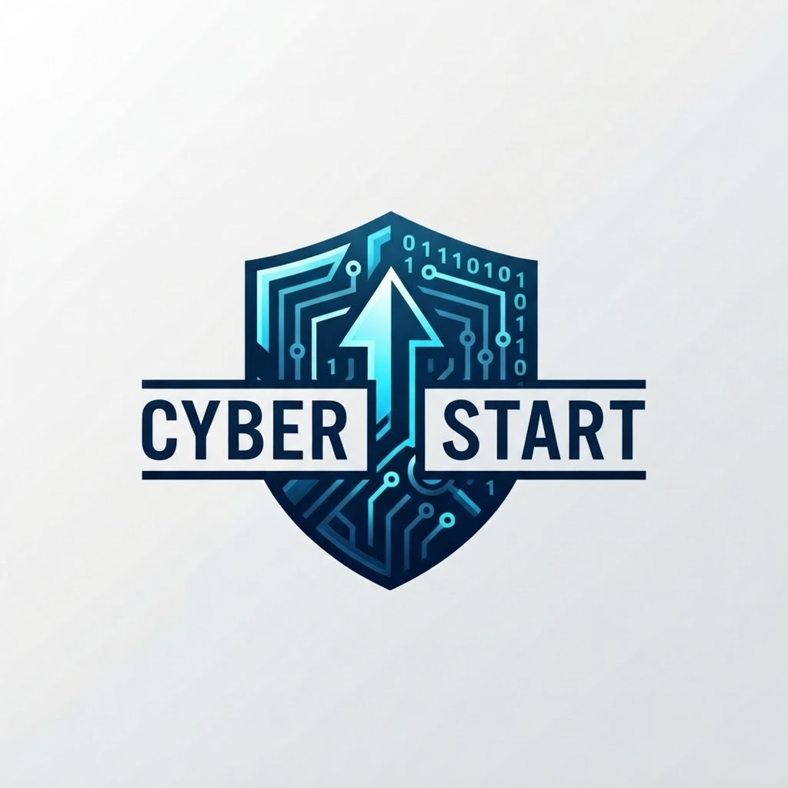

START HERE
Security foundations
Understand threats, risk and the three ideas behind protecting information.
Open introductory lesson ↗
CyberStart.Start learningCYBERSECURITY, FROM THE GROUND UP
The digital world needs more defenders. Start with the basics, build practical habits, and find your place in cybersecurity.
Beginner friendly • Free introductory lesson • Learn at your pace
01 / THE ROADMAP
You don’t need a technical background. This proposed curriculum takes you from everyday security to your first career direction.
START HERE
Understand threats, risk and the three ideas behind protecting information.
Open introductory lesson ↗PLANNED MODULE
Explore password managers, multifactor authentication, updates and backups.
PLANNED MODULE
Meet IP addresses, DNS, HTTPS and how devices communicate.
PLANNED MODULE
Learn to pause, inspect and report suspicious messages and activity.
PLANNED MODULE
Practise in an authorised environment, document findings and respect scope.
PLANNED MODULE
Explore security operations, governance, engineering and other career paths.
02 / YOUR FIRST LESSON
Cybersecurity protects information and the systems that use it. The CIA triad helps us describe three common goals.
FOUNDATIONS · ABOUT 5 MINUTESThink of a school portal. Only authorised people should see student records, grades should stay accurate, and students should be able to access their lessons.
Information is available only to authorised people. Access controls help keep student records private.
Information stays accurate and is changed only as intended. Permissions and audit trails help protect grades.
Systems and information are accessible when needed. Backups and resilient infrastructure help keep lessons online.
03 / WHY CYBERSTART
Our mission is to make the first steps into cybersecurity clear, approachable and useful.
CyberStart is an early-stage education concept for curious learners, career changers and people who want to understand the digital world. We believe good teaching starts with plain language and practical context.
Connect every idea to a real defensive need.
Only test systems you own or have explicit permission to assess.
04 / GOOD QUESTIONS
No. The introductory lesson starts with concepts. Coding can become useful later, depending on the career direction you choose.
The foundations lesson above is available now. The remaining roadmap modules describe the planned curriculum; they are not published courses yet.
This starter site does not issue certificates, provide accreditation or promise employment. It is an introduction to the subject.
No. The quiz runs in your browser and resets when the page reloads. This version has no accounts, tracking scripts or registration form.
YOUR NEXT CHAPTER STARTS SMALL